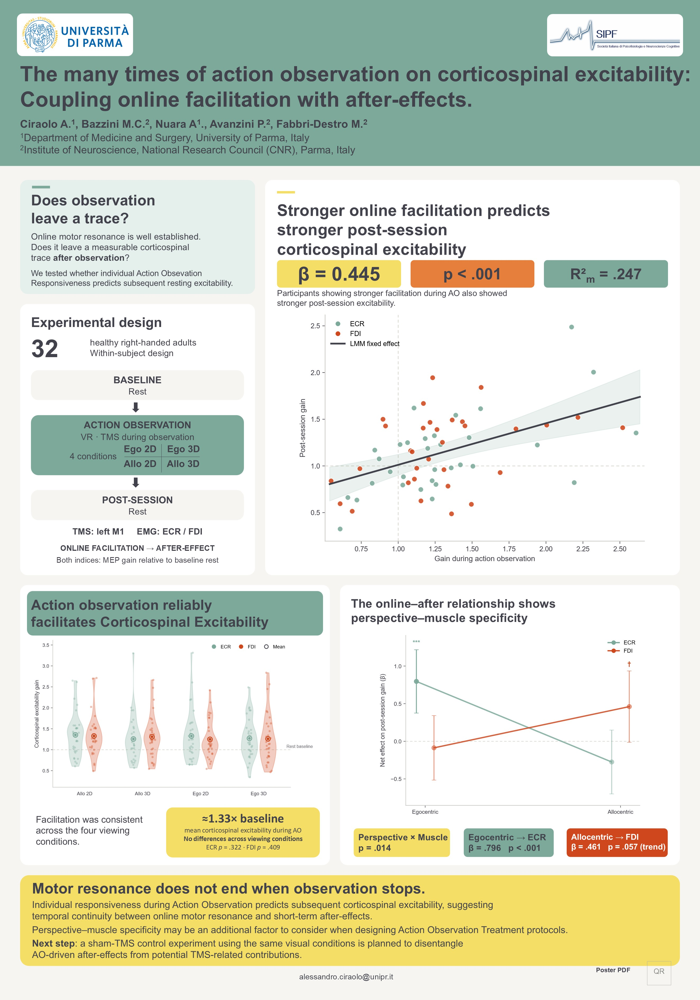

Poster

About the study
Action observation induces corticospinal facilitation during movement observation. This study investigated whether individual online responsiveness predicts subsequent changes in resting corticospinal excitability.
A sham-TMS control experiment using the same visual conditions is planned to disentangle AO-driven after-effects from potential TMS-related contributions.